The real chorus app driven through a PTY with the real CLIs. Each screenshot is the terminal as you would see it at that step.
52 checks passed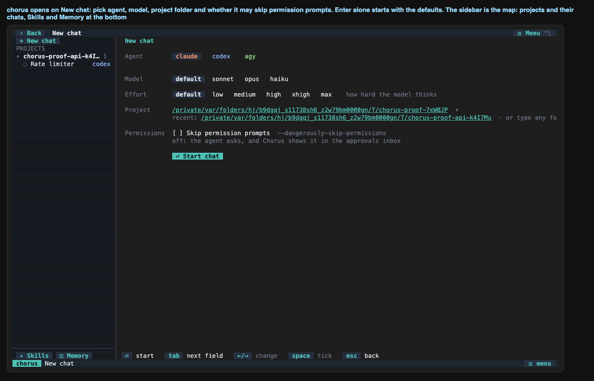
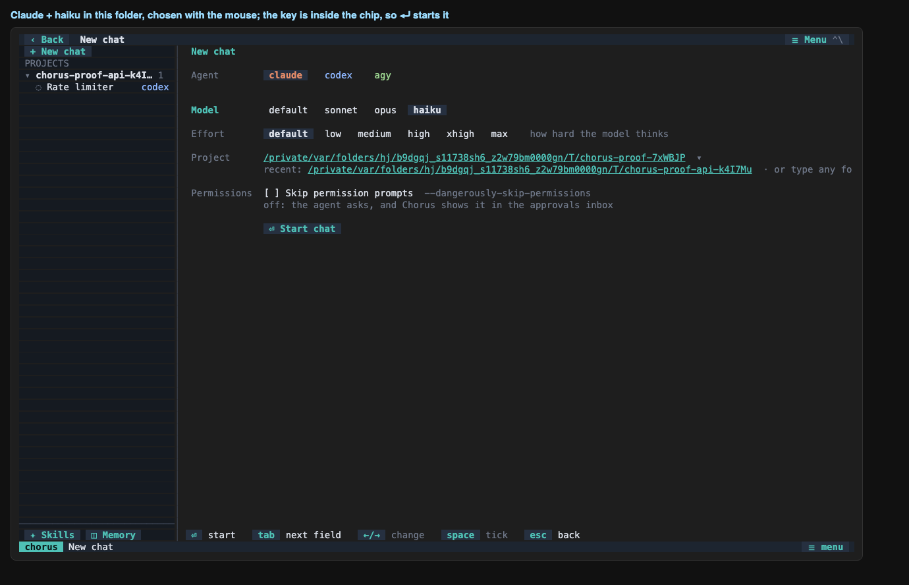

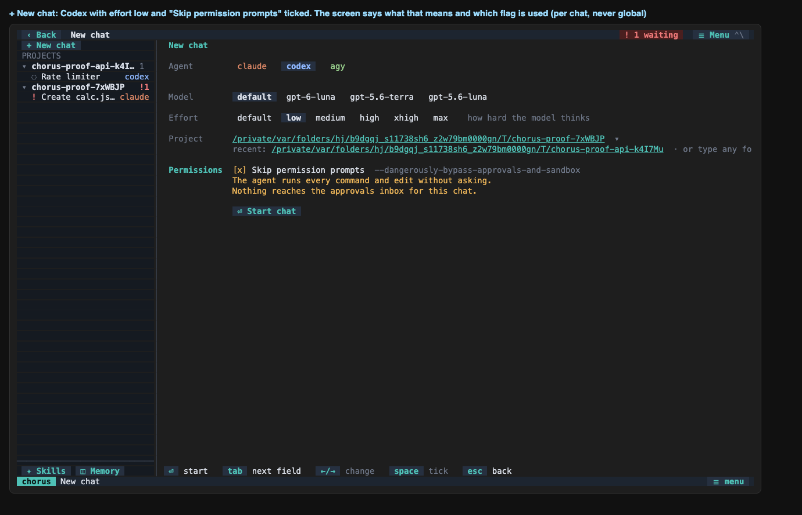

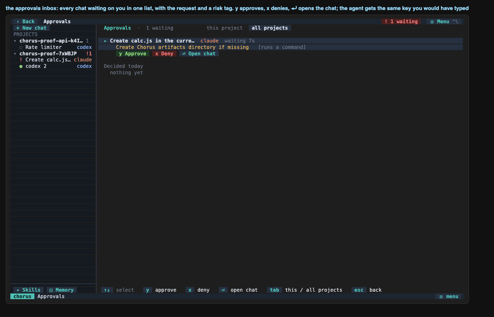


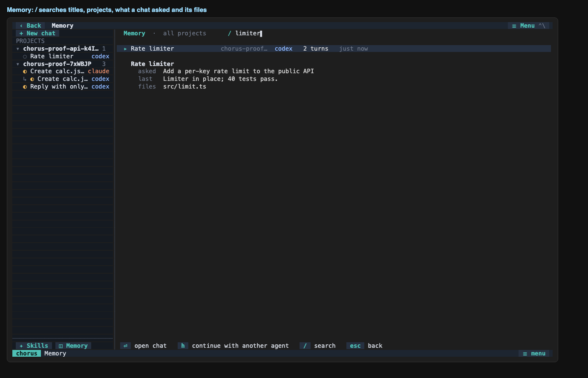
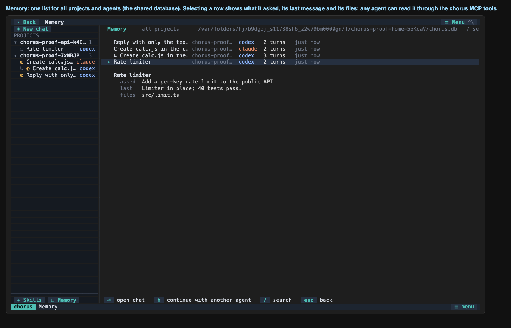
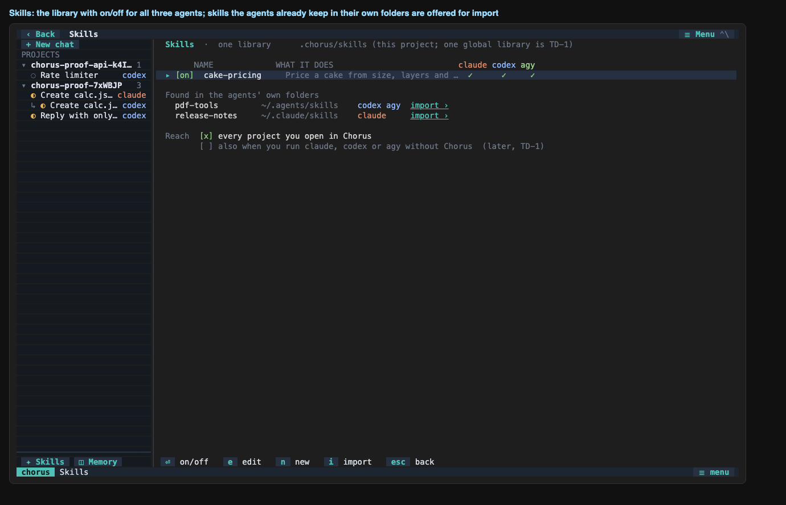
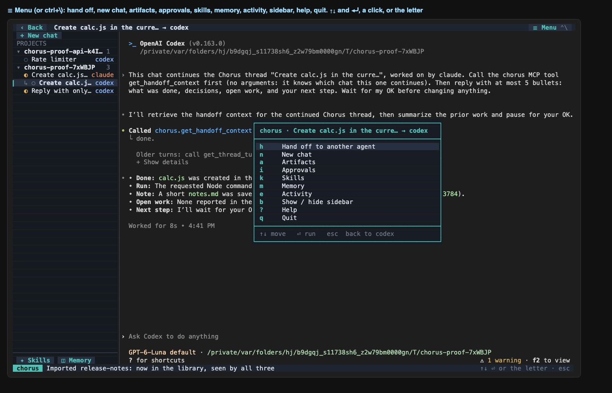
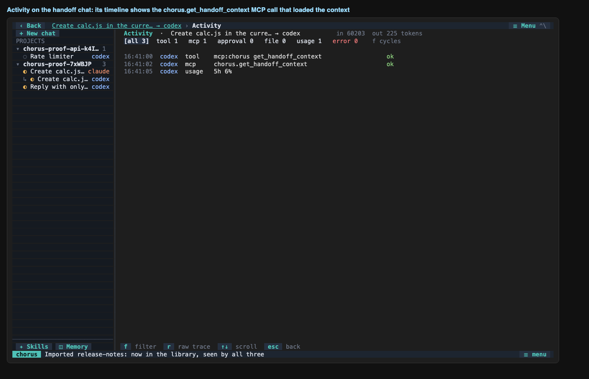
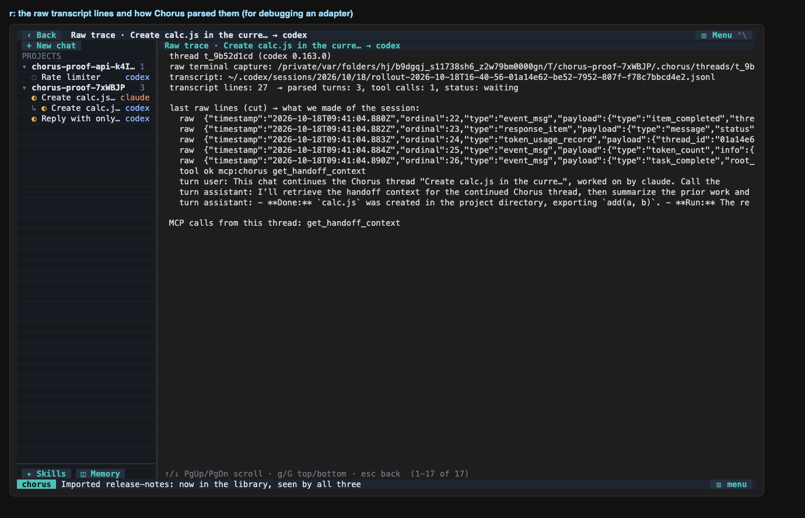
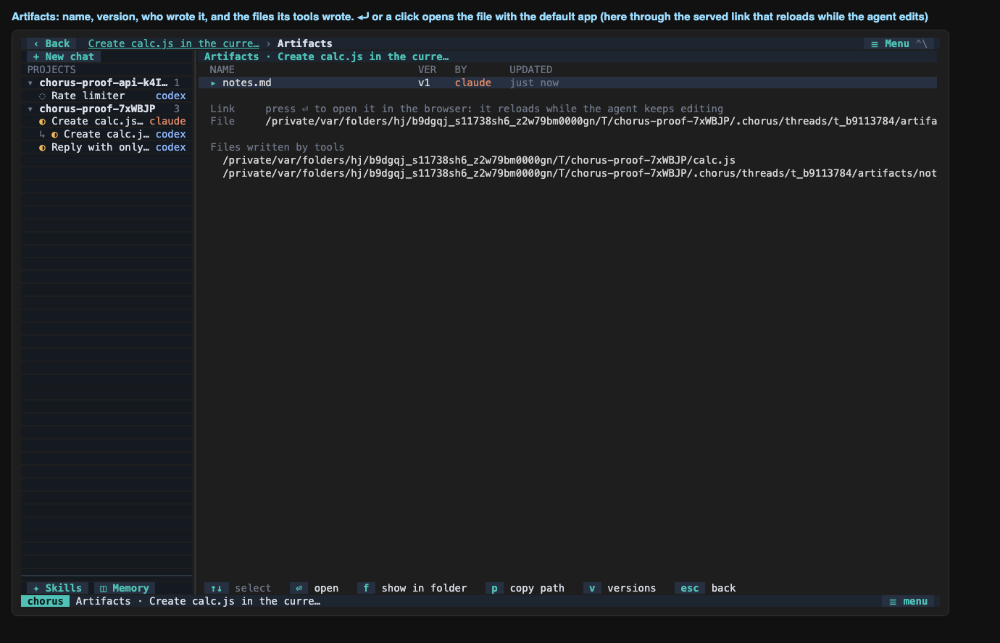
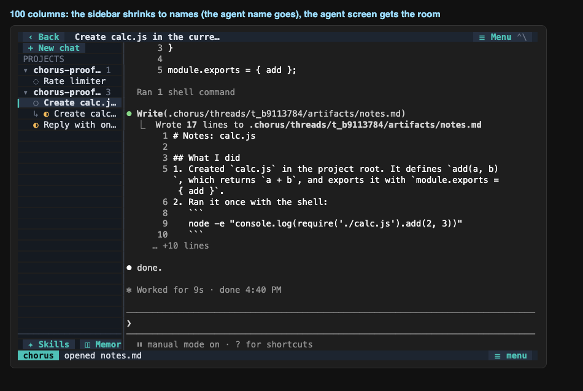
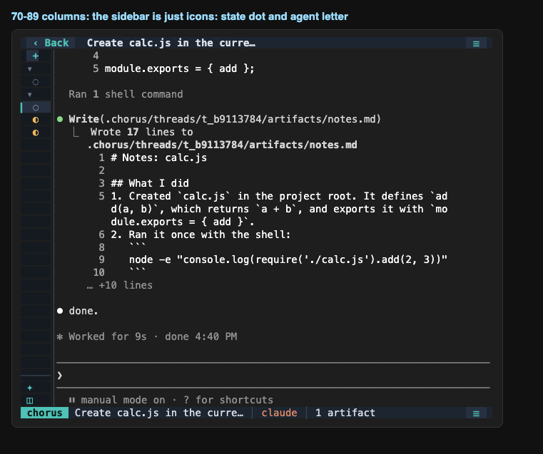
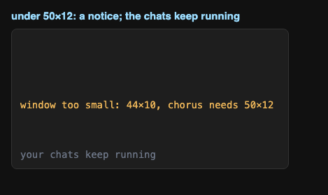
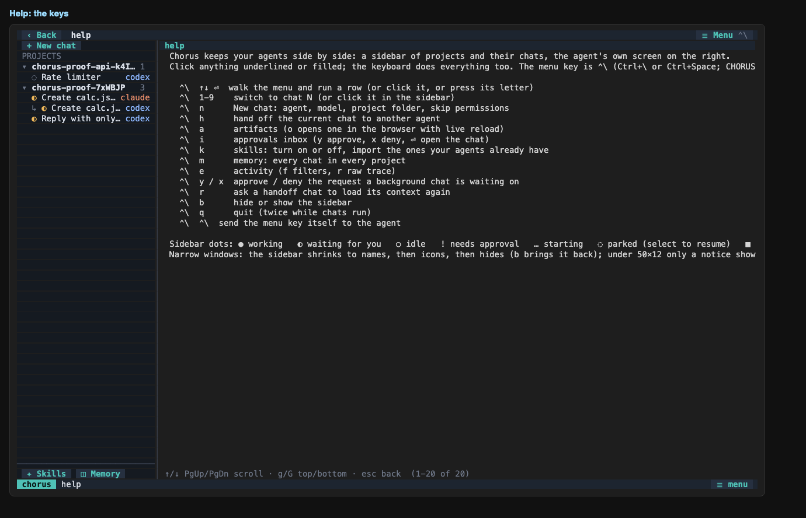
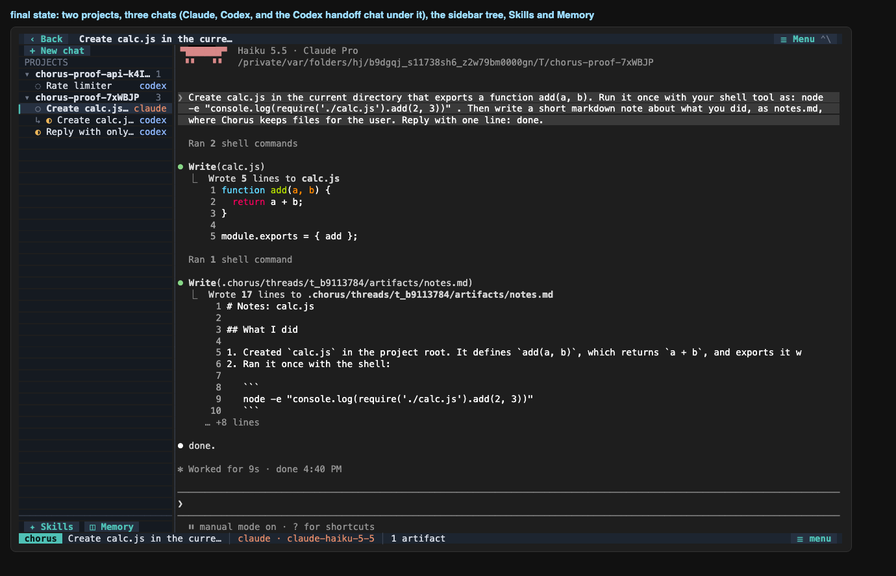
| ✅ | chorus opens on New chat with the top bar, the project tree, Skills and Memory |
| ✅ | the sidebar already lists the chat recorded in another project (one shared database) |
| ✅ | the screen offers agent, model, effort, project folder and permissions |
| ✅ | clicking haiku selects it (the model list is Claude's) |
| ✅ | Claude opens inside the app |
| ✅ | the top bar shows the path and the sidebar names the chat after the first message |
| ✅ | status line has the menu button |
| ✅ | the agent's own permission prompt is detected (sidebar shows !, the top bar counts it) |
| ✅ | + New chat opens the screen over the work in progress |
| ✅ | the effort list follows the agent (Codex lists the levels of its own models) |
| ✅ | ticking skip shows the warning and the Codex flag |
| ✅ | Codex opens in chat 2 and its own banner says what skip means (permissions: YOLO mode) |
| ✅ | chat 2 is in front, shows the amber skip marker, and Claude (chat 1) is still pending |
| ✅ | an approval card for the background chat appears over Codex, and the top bar badge stays |
| ✅ | clicking the badge opens the approvals inbox |
| ✅ | the inbox has the this project / all projects switch and lists the request with its risk tag |
| ✅ | at least one request was approved from the inbox |
| ✅ | the inbox keeps the decisions ("Decided") |
| ✅ | the store logged the approvals |
| ✅ | Claude created calc.js |
| ✅ | Claude chat finished: waiting dot, store state |
| ✅ | live tailing recorded the turns, the node call and the usage |
| ✅ | the artifact notes.md was registered in the chat project |
| ✅ | the Codex chat was started with its skip flag and its effort, and remembers both |
| ✅ | Codex answers in its own chat |
| ✅ | a click on a chat in the sidebar opens it |
| ✅ | handoff dialog names the chat and lists the other agents first with their plan |
| ✅ | the handoff chat appears in front, listed under the chat it continues (↳) |
| ✅ | the new chat is a child of the Claude chat in the store, in the same project |
| ✅ | Codex called get_handoff_context (Chorus saw the MCP call) |
| ✅ | its summary names calc.js |
| ✅ | the handoff chat settles as waiting |
| ✅ | Memory lists the chats of every project |
| ✅ | / searches the memory: only the matching chat is left |
| ✅ | selecting a chat shows what it asked and which files it touched |
| ✅ | Skills shows the library with on/off and what the agents already have |
| ✅ | ⏎ turns a skill off and unlinks it from the agents' folders |
| ✅ | clicking import copies a skill into the library |
| ✅ | ☰ Menu opens the ten rows of the menu |
| ✅ | activity view has the filter bar with counts and lists the tool and MCP calls |
| ✅ | f filters the timeline by kind |
| ✅ | the mcp filter keeps the MCP call |
| ✅ | r shows the raw trace next to what was parsed |
| ✅ | artifacts view lists the artifact with its version |
| ✅ | ⏎ opens the artifact (served with live reload) and shows its address |
| ✅ | the preview page serves what the agent wrote and reloads when it changes |
| ✅ | 100 columns: narrow sidebar (names only), the chat keeps the rest |
| ✅ | 78 columns: icon sidebar |
| ✅ | 56 columns: sidebar hidden, top bar and status line stay (the buttons shrink to ☰) |
| ✅ | under 50x12 only a notice shows |
| ✅ | back to full size: the sidebar and the chat are back |
| ✅ | app quits and restores the terminal |
$ chorus threads id agent state parent title t_9b52d1cd codex waiting t_b9113784 Create calc.js in the curre… → codex t_8513c91c codex waiting - Reply with only the text co… t_b9113784 claude waiting - Create calc.js in the curre… t_seed codex waiting - Rate limiter
$ chorus activity thread agent turns tools mcp tokens in/out cost limit t_9b52d1cd codex 3 1 1 60203/225 - 6% t_8513c91c codex 2 0 0 18307/9 - 5% t_b9113784 claude 2 5 0 38936/1140 - - t_seed codex 2 1 0 100/50 - -
$ chorus artifacts t_b9113784 08f9af5bdbc4 /private$TMPDIR/chorus-proof-7xWBJP/.chorus/threads/t_b9113784/artifacts/notes.md
$ chorus trace <claude chat>
thread t_b9113784 (claude 2.1.302)
raw terminal capture: $PROJECT/.chorus/threads/t_b9113784/raw/pty.log (44590 bytes)
transcript: ~/.claude/projects/-private-var-folders-hj-b9dgqj-s11738sh6-z2w79bm0000gn-T-chorus-proof-7xWBJP/00fdacce-5950-4d45-8c47-1cd034d3de57.jsonl
transcript lines: 60 → parsed turns: 2, tool calls: 5, status: waiting
last raw lines (cut) → what we made of the session:
raw {"parentUuid":"b51912c9-f099-466f-addb-32016088e021","isSidechain":false,"message":{"model":"claude-haiku-5-5","id":"msg_011Cg9UvZjkEPZzqWWybYKZ1","type":"messa
raw {"parentUuid":"f80ff838-23cd-4a77-95ae-68bf88d34f4d","isSidechain":false,"type":"system","subtype":"turn_duration","durationMs":9702,"messageCount":31,"timestam
raw {"type":"cost-state","sessionId":"00fdacce-5950-4d45-8c47-1cd034d3de57","totalCostUSD":0.010392090000000001,"totalAPIDuration":10210,"totalAPIDurationWithoutRet
raw {"type":"last-prompt","lastPrompt":"Create calc.js in the current directory that exports a function add(a, b). Run it once with your shell tool as: node -e \"co
raw {"type":"cost-state","sessionId":"00fdacce-5950-4d45-8c47-1cd034d3de57","totalCostUSD":0.010392090000000001,"totalAPIDuration":10210,"totalAPIDurationWithoutRet
tool ok Bash cd "$PROJECT
tool ok Bash mkdir -p "/private/var/folders/hj/b9dgqj_s11738sh6_z2w79bm0000gn/T/chorus-proof-
tool ok Write $PROJECT/cal
tool ok Bash cd "$PROJECT
tool ok Write $PROJECT/.ch
turn user: Create calc.js in the current directory that exports a function add(a, b). Run it once with your she
turn assistant: done.
MCP calls from this thread: none
$ chorus doctor
chorus doctor
node v26.10.0
project: $PROJECT
store: $PROJECT/.chorus/chorus.db (created on first use)
claude 2.1.302 verified 2.1.301 logged in
⚠ claude 2.1.302 is newer than the last verified 2.1.301; re-run tools/probe and check docs/integrations/claude.md
data: ~/.claude
codex 0.163.0 verified 0.163.0 logged in
data: ~/.codex
agy 1.4.2 verified 1.4.0 has a settings file (no status command; start agy once to sign in)
⚠ agy 1.4.2 is newer than the last verified 1.4.0; re-run tools/probe and check docs/integrations/agy.md
data: ~/.gemini/antigravity-cli